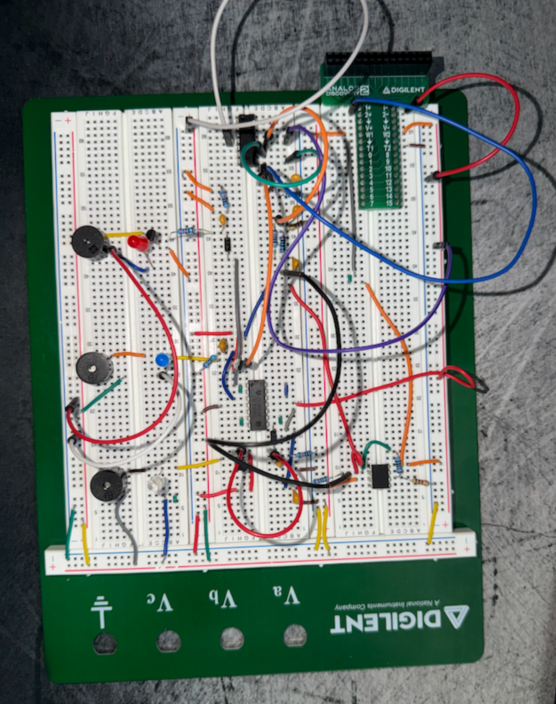
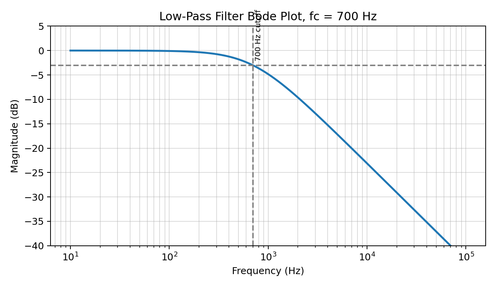
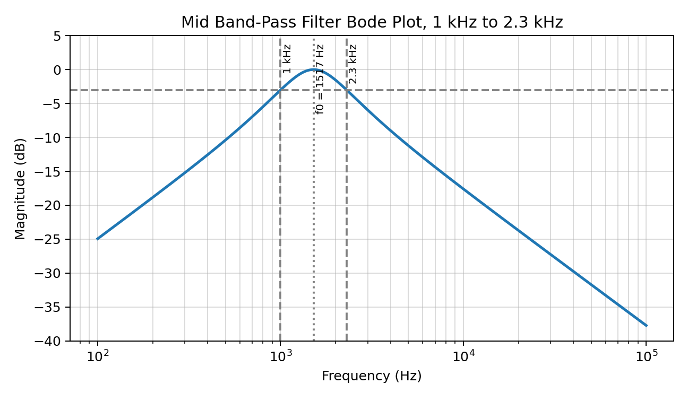
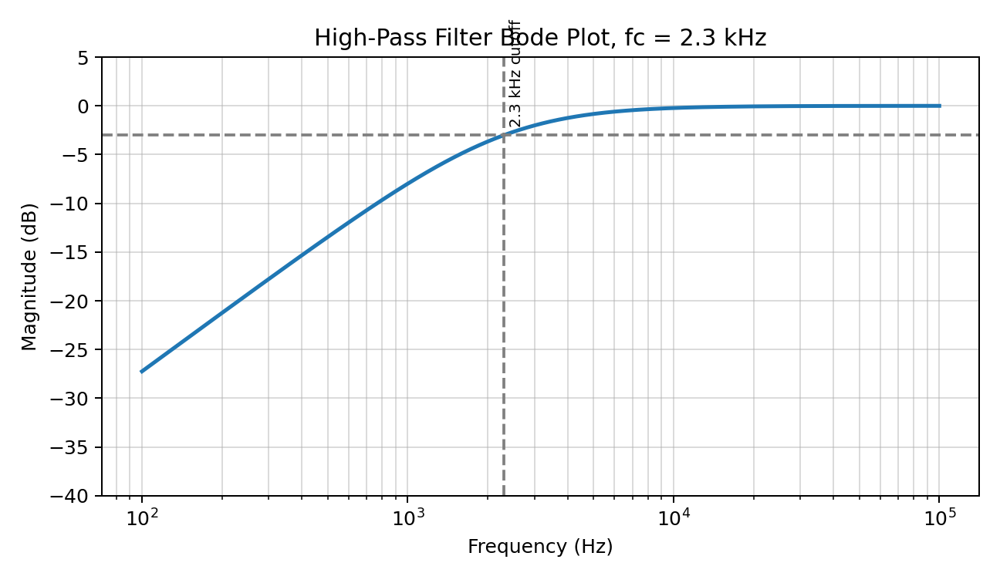
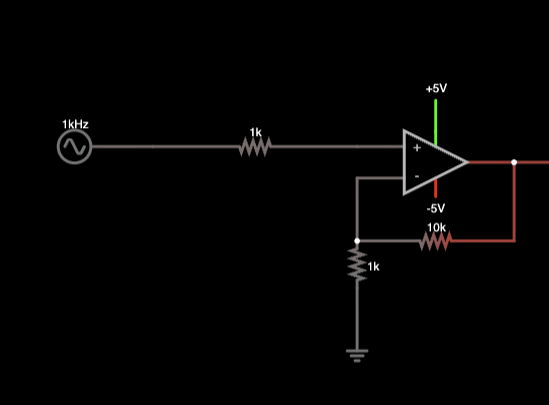
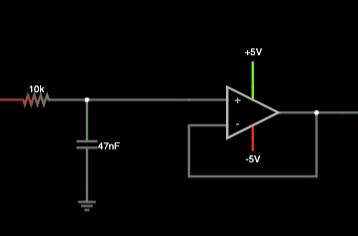
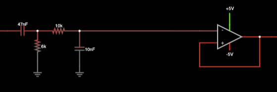
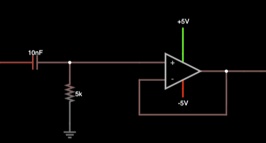
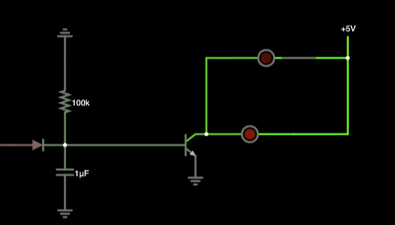

About
I'm an Electrical Engineering student at Virginia Tech with a focus on Controls, Robotics, and Autonomy. My academic and project work spans analog circuit design, digital systems, and embedded engineering — all pointing toward a career in avionics and guidance, navigation & control (GNC).
I build things end-to-end: from hand-drawn schematics and Bode plot analysis to breadboarded prototypes and documented failure logs. I'm drawn to systems that demand precision — the kind where getting the math wrong has real consequences.
Currently seeking co-op and internship opportunities in aerospace, defense, or embedded systems engineering.
Technical Skills
Projects
A 3-channel analog audio filter circuit that splits a music signal into low, mid, and high frequency bands — each driving a dedicated LED and buzzer output via NPN transistor switches. Designed from scratch, characterized with MATLAB Bode plots, and iterated through five documented failure cycles before reaching final form.
Signal Path
Documentation & Build Photos









Design Failures & Fixes
FAILURE 01
Pre-amp output too weak to drive filter stages — LEDs didn't respond to music input.
→ Increased gain stage, re-biased LM324 input
FAILURE 02
Filter cutoff frequencies shifted significantly from calculated values on physical breadboard.
→ Measured actual R/C values, revised MATLAB model
FAILURE 03
Band-pass filter had excessive rolloff — mid-band was nearly invisible in LED response.
→ Redesigned Q factor, tuned center frequency
FAILURE 04
Rectifier stage leaked into adjacent channel — cross-talk between LED outputs.
→ Added buffer op-amp stage between rectifier and transistor base
FAILURE 05
NPN transistor base current too low — transistor stayed in cutoff, LED wouldn't switch on.
→ Reduced base resistor value, verified V_BE with oscilloscope
Designed and simulated a power factor correction circuit in Proteus. Analyzed load compensation strategies and wrote a full technical report documenting reactive power reduction and switching control logic.
Embedded sensor system using Arduino that reads analog soil moisture levels, applies threshold-based logic for dry/wet classification, and displays real-time output via serial monitor and LED indicators.
Contact
I'm actively seeking co-op and internship opportunities in aerospace, avionics, embedded systems, and GNC engineering. My resume is available on request.